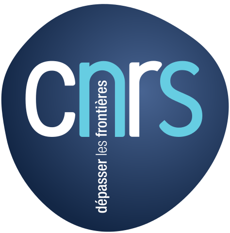

<!DOCTYPE html>
<html lang="en">

<head>
    
    <meta charset="utf-8">
    <meta http-equiv="X-UA-Compatible" content="IE=edge">
    <meta name="viewport" content="width=device-width, initial-scale=1">
    <meta name="description" content="Séminaire Parisien des Mathématiques de l'Imagerie">


    <title>Variational methods and optimization in imaging - Séminaire Parisien des Mathématiques de l'Imagerie</title>

    <link rel="canonical" href="http://localhost:4000/2019_ihp_semester/workshop1/">

    <!-- Favicon -->
    <link rel="icon" type="image/png" href="/img/favicon.png">

    <!-- Bootstrap Core CSS -->
    <link rel="stylesheet" href="/css/bootstrap.min.css">

    <!-- Custom CSS -->
    <link rel="stylesheet" href="/css/clean-blog.css">

    <!-- Custom Fonts -->
    <link href="http://maxcdn.bootstrapcdn.com/font-awesome/4.1.0/css/font-awesome.min.css" rel="stylesheet" type="text/css">
    <link href='http://fonts.googleapis.com/css?family=Lora:400,700,400italic,700italic' rel='stylesheet' type='text/css'>
    <link href='http://fonts.googleapis.com/css?family=Open+Sans:300italic,400italic,600italic,700italic,800italic,400,300,600,700,800' rel='stylesheet' type='text/css'>

    <script src="/js/jquery.min.js "></script>

    <link type="application/atom+xml" rel="alternate" href="http://localhost:4000/feed.xml" title="Séminaire Parisien des Mathématiques de l'Imagerie" />

    <!-- HTML5 Shim and Respond.js IE8 support of HTML5 elements and media queries -->
    <!-- WARNING: Respond.js doesn't work if you view the page via file:// -->
    <!--[if lt IE 9]>
        <script src="https://oss.maxcdn.com/libs/html5shiv/3.7.0/html5shiv.js"></script>
        <script src="https://oss.maxcdn.com/libs/respond.js/1.4.2/respond.min.js"></script>
    <![endif]-->

        <!-- Loading mathjax -->
        <script type="text/javascript" src="https://cdn.mathjax.org/mathjax/latest/MathJax.js?config=TeX-AMS_HTML"></script>

</head>


<body>

    <!-- Navigation -->
<nav class="navbar navbar-default navbar-custom navbar-fixed-top">
    <div class="container-fluid">
        <!-- Brand and toggle get grouped for better mobile display -->
        <div class="navbar-header page-scroll">
            <button type="button" class="navbar-toggle" data-toggle="collapse" data-target="#bs-example-navbar-collapse-1">
                <span class="sr-only">Toggle navigation</span>
                <span class="icon-bar"></span>
                <span class="icon-bar"></span>
                <span class="icon-bar"></span>
            </button>
            <a class="navbar-brand" href="/">Home</a>
        </div>

        <!-- Collect the nav links, forms, and other content for toggling -->
        <div class="collapse navbar-collapse" id="bs-example-navbar-collapse-1">
            <ul class="nav navbar-nav navbar-right">


                <!--<li>
                    <a href="/next">Prochains</a>
                </li>
                <li>
                    <a href="/past">Passés</a>
                </li>  -->

                  <li>
                        <a href="/seminar/">Seminar</a>
                  </li>
                  <li>
                        <a href="/2019_ihp_semester">2019 IHP Semester</a>
                  </li>

                <!--

                
                <li>
                    <a href="/coming/">Coming</a>
                </li>
                
                <li>
                    <a href="/index-old/">Imaging in Paris</a>
                </li>
                
                <li>
                    <a href="/seminar/">Imaging in Paris Seminar</a>
                </li>
                
                <li>
                    <a href="/2019_ihp_semester/">The Mathematics of Imaging</a>
                </li>
                
                <li>
                    <a href="/seminar/past/">Past seminar</a>
                </li>
                
                <li>
                    <a href="/2019_ihp_semester/school/">The mathematics of imaging: the CIRM pre-school</a>
                </li>
                
                <li>
                    <a href="/2019_ihp_semester/workshop1/">Variational methods and optimization in imaging</a>
                </li>
                
                <li>
                    <a href="/2019_ihp_semester/workshop1prog/">Variational methods and optimization in imaging</a>
                </li>
                
                <li>
                    <a href="/2019_ihp_semester/workshop2/">Statistical modeling for shapes and imaging</a>
                </li>
                
                <li>
                    <a href="/2019_ihp_semester/workshop2prog/">Statistical modeling for shapes and imaging</a>
                </li>
                
                <li>
                    <a href="/2019_ihp_semester/workshop3/">Imaging and machine learning</a>
                </li>
                
                <li>
                    <a href="/2019_ihp_semester/workshop3prog/">Imaging and machine learning</a>
                </li>
                
                <li>
                    <a href="/2019_ihp_semester/young/">Young Researchers in Imaging Seminars</a>
                </li>
                
                <li>
                    
                </li>
                
                -->
            </ul>
        </div>
        <!-- /.navbar-collapse -->
    </div>
    <!-- /.container -->
</nav>


    <!-- Page Header -->
<header class="intro-header" style="background-image: url('/../img/paris2.png')">
    <div class="container">
        <div class="row">
            <div class="col-lg-8 col-lg-offset-2 col-md-10 col-md-offset-1">
                <div class="site-heading">
                    <h1>Variational methods and optimization in imaging</h1>
                    <hr class="small">
                    <span class="subheading">Mathematics of Imaging Workshop #1</span>
                </div>
            </div>
        </div>
    </div>
</header>

<!-- MathJax support -->


<!-- Main Content -->
<div class="container">
	<div class="row">
		<div class="col-lg-8 col-lg-offset-2 col-md-10 col-md-offset-1">
			<h2 id="dates">Dates</h2>

<p>February 4th-8th  2019.</p>

<h2 id="registration">Registration</h2>

<p><a href="http://www.ihp.fr/en/CEB/T1-2019">Registration is free but mandatory</a> to be able to participate to this workshop and to the other one of the semester.</p>

<h2 id="program-click-here">Program (<a href="https://imaging-in-paris.github.io/semester2019/workshop1prog/">click here</a>)</h2>

<h2 id="confirmed-speakers">Confirmed Speakers</h2>

<ul>
  <li><a href="http://helios.mi.parisdescartes.fr/~rabergel/index.html">Rémy Abergel</a> (CNRS and Paris Descartes)</li>
  <li><a href="https://perso.liris.cnrs.fr/nicolas.bonneel/">Nicolas Bonneel</a> (CNRS Lyon)</li>
  <li><a href="https://imsc.uni-graz.at/bredies/">Kristian Bredies</a> (Univ. Graz)</li>
  <li><a href="http://www.ntu.edu.sg/home/xbresson/">Xavier Bresson</a> (Nanyang Technological University)</li>
  <li><a href="https://www.math.u-psud.fr/~buet/">Blanche Buet</a> (Univ. Paris Sud)</li>
  <li><a href="http://jbobin.cosmostat.org/">Jérome Bobin</a> (CEA)</li>
  <li><a href="http://www.cmap.polytechnique.fr/~antonin/">Antonin Chambolle</a> (CNRS and Polytechnique)</li>
  <li><a href="https://www.i2m.univ-amu.fr/~caroline.chaux/">Caroline Chaux</a> (CNRS and Aix-Marseille Université)</li>
  <li><a href="http://www-syscom.univ-mlv.fr/~chouzeno/">Emilie Chouzenoux</a> (CentraleSupélec)</li>
  <li><a href="https://research.fb.com/people/couprie-camille/">Camille Couprie</a> (Facebook)</li>
  <li><a href="https://www.brown.edu/academics/applied-mathematics/jerome-darbon">Jérome Darbon</a> (Univ. Brown)</li>
  <li><a href="https://www.math.u-bordeaux.fr/~cdossal/">Charles Dossal</a> (INSA Toulouse)</li>
  <li><a href="https://who.rocq.inria.fr/Vincent.Duval/">Vincent Duval</a> (INRIA)</li>
  <li><a href="https://www.math.ucdavis.edu/~fannjiang/">Albert Fannjiang</a> (UC Davis)</li>
  <li><a href="http://www.damtp.cam.ac.uk/research/afha/anders/">Anders Hansen</a> (Univ. Cambridge)</li>
  <li><a href="https://sites.google.com/site/jeanmichelmorelcmlaenscachan/">Jean-Michel Morel</a> (ENS Paris-Saclay)</li>
  <li><a href="http://guygilboa.eew.technion.ac.il/">Guy Gilboa</a> (Technion)</li>
  <li><a href="https://www.math.hu-berlin.de/~hp_hint/">Michael Hintermuller</a> (Humboldt-Universität)</li>
  <li><a href="https://www.tu-braunschweig.de/iaa/personal/lorenz">Dirk Lorenz</a> (Univ. Braunschweig)</li>
  <li><a href="https://www.math.u-bordeaux.fr/~npapadak/">Nicolas Papadakis</a> (CNRS and Bordeaux)</li>
  <li><a href="http://www.fabienpierre.fr/bienvenue.html">Fabien Pierre</a> (Université Nancy)</li>
  <li><a href="http://www.damtp.cam.ac.uk/user/cmhsp2/">Clarice Poon</a> (Univ. Bath)</li>
  <li><a href="http://www.hcm.uni-bonn.de/de/people/profile/martin-rumpf/">Martin Rumpf</a> (Bonn)</li>
  <li><a href="http://www.damtp.cam.ac.uk/user/cbs31/Home.html">Carola Schoenlieb</a> (Cambridge)</li>
  <li><a href="https://ipa.iwr.uni-heidelberg.de/cschnoerr/">Christoph Schnörr</a> (Univ. Heidelberg)</li>
  <li><a href="http://www.mathematik.uni-kl.de/imagepro/members/steidl/">Gabriele Steidl</a> (Kaiserslautern)</li>
  <li><a href="http://hugues.zahlt.info/bienvenue.html">Hugues Talbot</a> (Centrale Paris)</li>
  <li><a href="https://www.nottingham.ac.uk/mathematics/people/y.vangennip">Yves van Gennip</a> (TU Delft)</li>
  <li><a href="https://www.mia.uni-saarland.de/weickert/index.shtml">Joachim  Weickert</a> (Univ. Saarland)</li>
  <li><a href="https://voices.uchicago.edu/willett/">Rebecca Willett</a> (Univ. Chicago)</li>
  <li><a href="http://cdm.unimo.it/home/matematica/zanni.luca/">Luca Zanni</a> (Univ. Modena)</li>
</ul>

<h2 id="organizers">Organizers</h2>

<ul>
  <li><a href="https://www.math.u-bordeaux.fr/~jaujol/">Jean-François Aujol</a> (Bordeaux).</li>
  <li><a href="https://delon.wp.mines-telecom.fr/">Julie Delon</a> (Paris 5)</li>
  <li><a href="http://desolneux.perso.math.cnrs.fr/">Agnès Desolneux</a> (CNRS and ENS Cachan)</li>
  <li><a href="https://fadili.users.greyc.fr/">Jalal Fadili</a> (ENSICAEN)</li>
  <li><a href="https://www.idpoisson.fr/galerne/">Bruno Galerne</a> (Orléans)</li>
  <li><a href="http://www.gpeyre.com">Gabriel Peyré</a> (CNRS and ENS)</li>
</ul>

<h2 id="scientific-committee">Scientific committee</h2>

<ul>
  <li>Coloma Ballester (Pompeu Fabra Univ., Spain)</li>
  <li>Andrea Bertozzi (UCLA, USA)</li>
  <li>Laure Blanc-Feraud (CNRS, Nice Sophia Antipolis Univ., France)</li>
  <li>Donald Geman (Johns Hopkins Univ., USA)</li>
  <li>Stephane Mallat (ENS Ulm, France)</li>
  <li>Simon Masnou (Univ. Lyon 1, France)</li>
  <li>Jean-Michel Morel (ENS Cachan, France)</li>
  <li>David Mumford (Brown University, Providence,USA)</li>
  <li>Mila Nikolova (CNRS, ENS Cachan, France)</li>
  <li>Joachim Weickert (Saarland Univ., Germany)</li>
</ul>

<h2 id="sponsors">Sponsors</h2>

<p align="center">

<a href="http://www.ihp.fr">

</a>&nbsp;&nbsp;

<a href="http://www.cnrs.fr/">

</a>&nbsp;&nbsp;

<a href="http://www.u-psud.fr/fr/index.html">

</a>

<br />

<a href="https://www.sciencesmaths-paris.fr/">

</a>&nbsp;&nbsp;

<a href="http://www.upmc.fr/">

</a>&nbsp;&nbsp;

<a href="https://www.cimpa.info/">

</a>

<br />

<a href="http://gdr-mia.math.cnrs.fr/">

</a>

<a href="http://www.gpeyre.com/noria/">

</a>


</p>

		</div>
	</div>
</div>

<hr>


    <!-- Footer -->
<footer>
    <div class="container">
        <div class="row">
            <div class="col-lg-8 col-lg-offset-2 col-md-10 col-md-offset-1">
                <ul class="list-inline text-center">

                    <li>
                        <a href="/feed.xml">
                            <span class="fa-stack fa-lg">
                                <i class="fa fa-circle fa-stack-2x"></i>
                                <i class="fa fa-rss fa-stack-1x fa-inverse"></i>
                            </span>
                        </a>
                    </li>
                    
                    
                    
                    <li>
                        <a href="https://github.com/imaging-in-paris">
                            <span class="fa-stack fa-lg">
                                <i class="fa fa-circle fa-stack-2x"></i>
                                <i class="fa fa-github fa-stack-1x fa-inverse"></i>
                            </span>
                        </a>
                    </li>
                    
                </ul>
                <!--
                  <p class="copyright text-muted">Copyright &copy; Séminaire Parisien des Mathématiques de l'Imagerie 2023</p>
                -->
            </div>
        </div>
    </div>
</footer>

<!-- jQuery
<script src="/js/jquery.min.js "></script>
-->

<!-- Bootstrap Core JavaScript -->
<script src="/js/bootstrap.min.js "></script>

<!-- Custom Theme JavaScript -->
<script src="/js/clean-blog.min.js "></script>


<!-- Google analytics -->
<script src="http://www.google-analytics.com/urchin.js" type="text/javascript">
</script>
<script type="text/javascript">
_uacct = "UA-781488-2";
urchinTracker();
</script>


</body>

</html>
